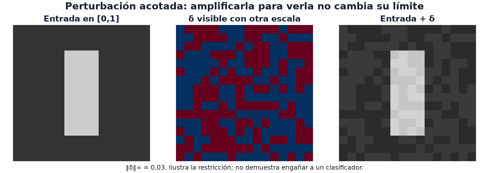

21 · Adversarial y robustez
Nivel 3 — Las modalidades · Ruta de Aprendizaje
Dos modelos aciertan la misma imagen. ¿Podemos cambiarla un poco para que solo uno se equivoque? Acertar en los mismos ejemplos no significa tener la misma frontera de decisión. El gradiente del módulo 10 permite buscar una dirección que revele esa diferencia.
La robustez adversarial estudia cambios elegidos para provocar un fallo, dentro de restricciones explícitas. Es distinta de resistir ruido accidental o reconocer datos de otra distribución, aunque estas preguntas se relacionen.

La imagen central muestra cambios de −0.03 y +0.03 con una paleta que permite
verlos; las imágenes laterales usan el rango [0, 1]. No es evidencia de un ataque
exitoso: hace falta evaluar un modelo. Modificar un poco muchos píxeles puede
acumular un cambio importante, según cómo midamos su tamaño.
El giro conceptual
Durante entrenamiento movíamos los pesos para bajar la pérdida. Aquí
mantenemos esos pesos y calculamos cómo cambiar la entrada para subirla.
El fragmento supone un clasificador modelo, imágenes x y etiquetas y;
usamos el modo de evaluación del clasificador para evitar cambios de estado
de entrenamiento:
import torch
import torch.nn as nn
modelo.eval()
x = x.clone().detach().requires_grad_(True) # la ENTRADA pide gradiente
perdida = nn.functional.cross_entropy(modelo(x), y)
grad, = torch.autograd.grad(perdida, x) # ∂L/∂x, no ∂L/∂wautograd.grad obtiene la derivada respecto de x; aquí no hay un paso de
optimizador sobre los pesos. Algunas entradas están cerca de una frontera de
decisión: cambiar en cierta dirección puede cruzarla. Un gradiente es una
aproximación local, no una promesa de cruzar esa frontera.
Qué significa «cambiar poco»
La perturbación es δ = x_atacada − x. Un presupuesto necesita unidades y una
norma:
| Medida | Qué limita | Para δ = (0.02, −0.02) |
|---|---|---|
L∞ = max(abs(δ)) | el mayor cambio de una coordenada | 0.02 |
L2 = sqrt(sum(δ²)) | el tamaño conjunto de todos los cambios | ≈0.0283 |
Un ε=0.03 en píxeles [0, 1] equivale aproximadamente a 7.65 niveles en una
escala 0–255. Tras normalizar un canal con desviación σ, el cambio es δ/σ:
no se puede trasladar el mismo número entre ambos espacios. También importa
si la norma se calcula por imagen o sobre todo el lote.
FGSM: maximizar la aproximación lineal
Fast Gradient Sign Method: moverse ε en la dirección del signo del
gradiente. La receta es FGSM y perturbaciones acotadas:
x_atacada = (x + epsilon * grad.sign()).detach()Por qué el signo y no el gradiente: se quiere el máximo daño dentro de una
restricción de norma infinito (ningún píxel se mueve más de ε). Si aproximas
la pérdida por su tangente, maximizas grad · delta: cada coordenada debe tomar
epsilon * sign(grad). Es el óptimo de esa aproximación lineal dentro de la
caja, no del problema no lineal completo. Por ejemplo, con gradiente (2, −1)
y ε=0.1, elegir δ=(0.1, −0.1) aumenta la aproximación en 0.3.
Con restricciones adicionales de rango hay que recortar también la entrada.
Fundamento lineal de FGSM.
La prueba de la receta muestra una caída de accuracy en un clasificador
sintético concreto, respetando ε. Ese resultado es un ejemplo de funcionamiento,
no una tasa de éxito garantizada para otros datos o modelos.
PGD: iterar el mismo paso
El ataque llamado Projected Gradient Descent recalcula el gradiente tras cada paso y proyecta al presupuesto permitido. Aunque su nombre diga «descent», para un ataque no dirigido hacemos ascenso de la pérdida de la clase real. La receta admite varios tamaños de paso y normas:
x_atacada = pgd(modelo, x, y, epsilon=0.03, pasos=10)La implementación completa está en la misma receta, FGSM y perturbaciones acotadas. Las pruebas comprueban norma y rango en sus casos y muestran también un contraejemplo: el último paso de PGD puede perder un ataque que FGSM sí logró. El tamaño de paso y la curvatura importan.
Los dos detalles que hacen la diferencia entre que esto funcione o no:
- La proyección. Después de cada paso hay que volver al presupuesto, o el
ataque se escapa de
ε. La receta traeproyectar_normapara norma infinito y para L2, y verifica que una perturbación que ya cabía quede intacta. - El recorte al rango válido (el parámetro
rango,(0, 1)para una imagen en valores [0,1], antes de normalizar canales). Si el contrato exige ese rango o recorta a él, una candidata fuera del rango no representa lo que finalmente evaluará el juez.
PGD suele encontrar ataques más fuertes, a cambio de varias evaluaciones de gradiente. No garantiza mejorar en cada iteración ni superar FGSM. Compara candidatos válidos y conserva el mejor según tu objetivo. Para un ataque no dirigido, esta selección usa la pérdida de la clase verdadera como sustituto:
import torch
from torch.nn import functional as F
def elegir_mayor_perdida(modelo, candidatos, y):
"""Elige por muestra entre candidatos ya comprobados en norma y formato."""
modelo.eval()
with torch.no_grad():
perdidas = torch.stack([F.cross_entropy(modelo(c), y, reduction="none")
for c in candidatos])
lotes = torch.stack(candidatos)
eleccion = perdidas.argmax(dim=0)
return lotes[eleccion, torch.arange(len(y), device=y.device)].detach()Incluye la entrada original, FGSM y las variantes PGD que hayas medido. Esto conserva la mayor pérdida entre esos candidatos; no prueba optimalidad global. En Double Agent Dilemma importa el éxito selectivo y la penalización del juez, por lo que también debes evaluar esa métrica, no elegir solo por cross-entropy.
Ataques dirigidos, y el caso de 2026
Un ataque no dirigido solo quiere que el modelo se equivoque: se sube la pérdida de la clase correcta. Un ataque dirigido quiere una clase concreta: se baja la pérdida de la clase objetivo (el gradiente se resta en vez de sumarse).
Double Agent Dilemma (2026) pedía algo más fino que las dos cosas, y es el mejor ejemplar de esta forma de tarea. Dos clasificadores —un ResNet-18 (CNN) y un ViT-Tiny (Transformer)— acertaban el 100% en las mismas imágenes. Había que fabricar, por imagen, dos perturbaciones:
- Tipo A: el ResNet sigue acertando, el ViT falla.
- Tipo B: el ViT sigue acertando, el ResNet falla.
Es decir: engañar a uno y no al otro, en los dos sentidos. Sus arquitecturas imponen sesgos distintos (módulo 13), pero la selectividad depende de las fronteras aprendidas. Incluso dos redes con la misma arquitectura y pesos diferentes pueden tener vulnerabilidades distintas. Nada garantiza que exista el ataque selectivo deseado dentro de un presupuesto concreto.
Una pérdida candidata para atacar al modelo V y preservar al R es maximizar
CE(V(x + δ), y) − λ·CE(R(x + δ), y). El primer término busca un error en V;
el segundo penaliza dañar R. λ controla el compromiso, pero la pérdida sigue
siendo un sustituto del éxito selectivo. Optimizar solo V puede transferir a R
o no: esa transferencia se observa en las predicciones.
El presupuesto de norma no es un detalle: es el puntaje
El puntaje de Double Agent Dilemma era:
S = (éxitos_A + éxitos_B) / (2M) × PF
Aquí S está en 0–1; multiplicarlo por 100 lo expresa en la escala de las
referencias publicadas. PF es un factor entre 0.5 y 1 que penaliza
perturbaciones de norma alta. Consecuencia directa: una perturbación enorme que engaña siempre puede
puntuar menos que una discreta que engaña casi siempre.
En la cohorte Individual 2026 (440 participantes), tuvo la mayor media (20.3/100). Publicó baseline 0 y Comité 96.99, igual que Ghost e IOAI Field publicaron sus referencias. El 36% de esa cohorte obtuvo cero; el agregado no identifica las causas de esos resultados.
El espacio de la perturbación forma parte de la tarea
La entrega usa la resolución original de cada imagen, tensores
.ptdentro de un zip plano, y suma la perturbación a la imagen cruda antes del pipeline fijado. Una perturbación útil en el tensor 224×224 del modelo todavía necesita representar correctamente esa operación sobre la entrada.
El otro lado: robustez y detección
La misma familia incluye defender, no solo atacar. Tres casos del temario y de tareas reales:
Fuera de distribución (OOD). Los datos pueden cambiar de origen, estilo o clases respecto del entrenamiento. El error de reconstrucción de PCA o un autoencoder y la confianza del clasificador son señales candidatas, no certificados de pertenencia: una muestra nueva puede reconstruirse bien y recibir una predicción confiada pero errónea.
Detectar contenido sintético. Synthetic Speech Detector (2025) pedía distinguir voz humana de generada. Puede tratarse como clasificación supervisada sobre features de audio, sin entrenar una GAN. Si aprende un artefacto de un generador concreto, puede fallar con otro: la separación por origen importa tanto como en el módulo 19.
Datos corrompidos. Widget Corp (2024) introducía fallas en datos y etiquetas. En regresión, MAE es menos sensible que MSE a grandes errores numéricos; eso no la convierte en reemplazo universal de cross-entropy para clasificación. El desacuerdo con predicciones fuera de muestra puede señalar etiquetas a examinar, pero también ejemplos raros y válidos. Quitarlos todos podría borrar justo los casos que queríamos aprender.
⚠️ Las tres trampas
1. Optimizar solo una pérdida sustituta. Una mayor cross-entropy no asegura un mejor score selectivo. La norma puede ser un límite de validez, una penalización del puntaje o ambas cosas: el contrato determina cuál.
2. Perturbar después del preprocesamiento. Si el juez aplica su pipeline a la imagen cruda + tu perturbación, tu perturbación tiene que estar en el espacio crudo. Perturbar el tensor ya normalizado ataca algo que el juez nunca va a ver.
3. Atacar un comportamiento distinto del evaluado. Si el juez usa modo
evaluación, activar dropout o actualizar estadísticas de BatchNorm cambia la
función que atacas. La receta usa eval(). Si una defensa mantiene aleatoriedad
en inferencia, desactivarla tampoco reproduce el juez: haría falta considerar
esa variación al estimar el gradiente.
🏋️ Práctica
| # | Ejercicio | Fuente | Qué practica |
|---|---|---|---|
| 1 | Implementa FGSM sobre un clasificador de MNIST y grafica accuracy vs. ε | FGSM y perturbaciones acotadas | la curva del compromiso |
| 2 | Compara PGD con FGSM al mismo ε, midiendo puntaje y tiempo | FGSM y perturbaciones acotadas | qué compra iterar |
| 3 | ⭐⭐ Double Agent Dilemma: perturbaciones tipo A y tipo B | enunciado oficial | la tarea central del módulo |
| 4 | Mide transferencia: ¿un ataque contra el ResNet engaña al ViT? | — | la base de la tarea 3 |
| 5 | Synthetic Speech Detector: detectar voz sintética | repo oficial | el lado defensivo |
| 6 | Evadir un detector de texto generado | NEOAI 2025 | ataque en texto |
El ejercicio 4 permite separar vulnerabilidad y selectividad: observa los
cuatro resultados posibles —ambos aciertan, falla solo uno, falla el otro,
fallan ambos— al variar ε. Una única tasa de ataque esconde esa estructura.
🎯 Mini-desafío (formato IOAI)
Tarea: Double Agent Dilemma (IOAI 2026, día 2). Métrica:
(éxitos_A + éxitos_B) / 2M × PF, conPFpenalizando la norma. Referencias publicadas (0–100): baseline 0, Comité 96.99. Modelos:torchvision resnet18ytimm vit_tiny_patch16_224, solo esos. Límite: 12 minutos de reloj para 100 imágenes × 2 perturbaciones.La comparación central es entre atacar un solo modelo y equilibrar dos términos. ¿En qué imágenes el segundo término preserva al otro clasificador, y en cuáles impide el ataque? Un éxito selectivo válido aporta score; fallar ambos no aporta ese éxito. La norma permite estudiar cuánto cuesta cada cambio de predicción, dentro del formato y los límites oficiales.
Para poner a prueba la intuición
¿Por qué una perturbación que engaña a ambos modelos puede fallar en Double Agent Dilemma?
¿Qué gradiente necesitas: respecto de la imagen o de los pesos?
Explora cómo cambian éxito, norma y score al aumentar el presupuesto de perturbación.
← 20 - Modelos generativos · Ruta de Aprendizaje · 22 - Interactivos →